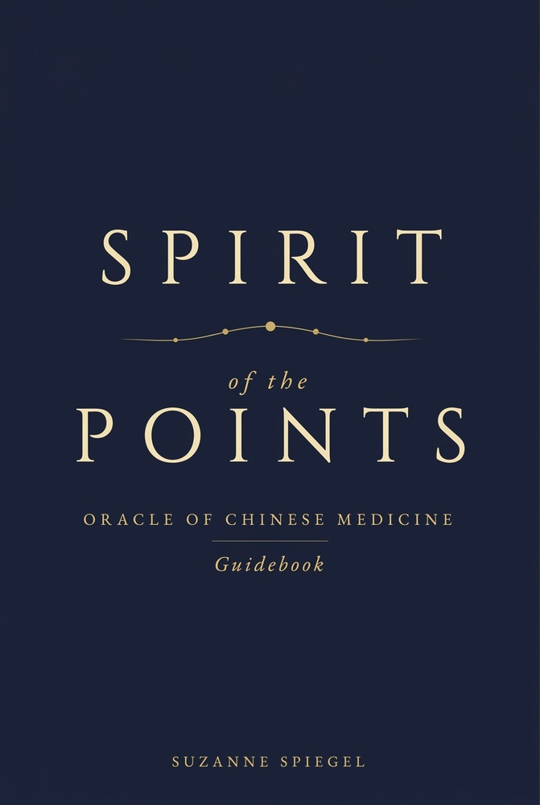

Why I Made This
A Personal Offering
For more than twenty years, I have lived inside the questions that Taoism, yoga, and meditation ask of us. How do we stay open when life breaks us? How do we move with what is, rather than against it? How do we remain present to our own lives?
When I trained as an acupuncturist, I found that Chinese medicine was asking the same questions, only its insights were mapped into the body itself. Into a living system that had been listening to what it means to be human for thousands of years.
I began writing this deck while sitting beside my father as he was dying.
There were days when I didn't know how to be in that room and not fall apart completely. The grief would rise and I had nowhere to put it. I felt the helplessness of loving someone I could not help.
During those weeks, certain acupuncture points kept coming to me—Spirit Storehouse, Gate of Hope, Wail of Grief. They became quiet companions, not answers but presences. They showed me how to stay open when everything in me wanted to close.
Point by point, I wrote my way through loss.
What began as a personal practice became this.
The Spirit of the Points held me close to my own center when everything else was shifting. Now it is my heart's offering to you.
— Suzanne Spiegel, Author
